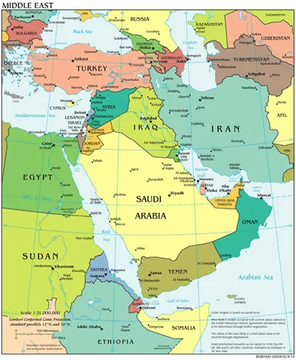
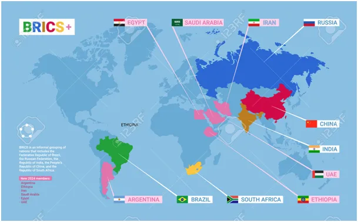
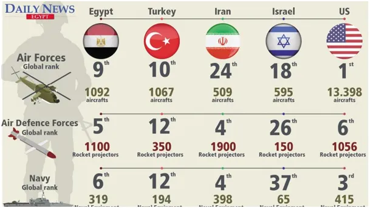

Egipt otwiera nowy rozdział w stosunkach z Turcją.
W tle widać olbrzymie złoża gazu pod dnem Morza Śródziemnego pomiędzy Turcją, Cyprem, Egiptem i Izraelem.
Egipt to oczko w głowie całego świata, bo to w Egipcie jest Kanał Sueski, najkrótsza droga morska z Azji na zachód. Od stycznia Egipt jest też członkiem BRICS, organizacji państw otwarcie mających na celu eliminacje dolara USA z obiegu światowego.

USA rozpętały i wygrały dwie wojny światowe, aby tego dolara wprowadzić pod przymusem światu a tu taki numer. Poprzez Izrael USA trzyma lufę przy skroni egipskiego państwa, było to możliwe, gdy cały świat Islamu był podzielony, ale od dekady chińska dyplomacja skleja te połamane fragmenty. Kryzys w Gazie to próba wyrzucenia Palestyńczyków z ich kraju na egipskie pustynie Półwyspu Synaj.

Dziś stanęli obok siebie dawni wrogowie, obecnie partnerzy posiadający dwie największe armie w regionie o podobnym potencjale. Dla Izraela nawet mały Liban jest poważnym zmartwieniem i unika starć na północy, by nie otwierać drugiego frontu, jakby nie patrzeć to Izrael jest teraz między młotem a kowadłem. To porozumienie dwóch gigantów zmienia sytuacje w regionie.

"Goszcząc po raz pierwszy od dziesięciu lat swojego tureckiego odpowiednika w stolicy Kairze, prezydent Egiptu Abdel-Fattah al-Sisi powiedział w środę, że jego kraj otwiera nową kartę w stosunkach z Turcją.
„Witam prezydenta Recepa Tayyipa Erdogana podczas jego pierwszej wizyty w Egipcie od ponad 10 lat, aby otworzyć nową kartę między naszymi dwoma krajami, aby wzbogacić nasze dwustronne stosunki i skierować je na właściwe tory” – powiedział Sisi podczas wspólnej konferencji prasowej z Lider turecki.
Sisi powiedział, że Egipt stara się zwiększyć swój handel z Turcją do 15 miliardów dolarów w ciągu najbliższych pięciu lat. "
Źródło aa.com.tr
Paweł Klimczewski